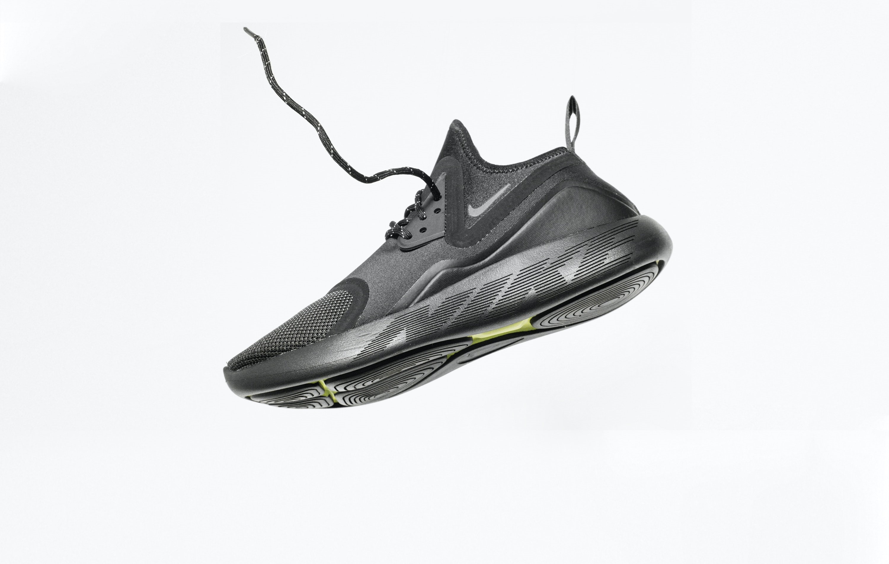
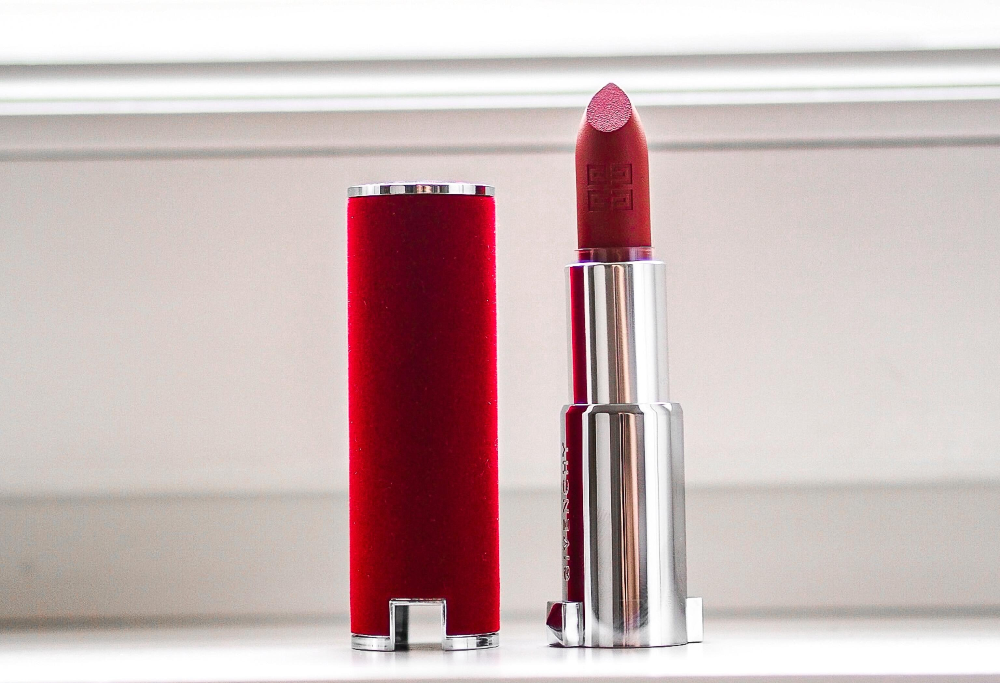
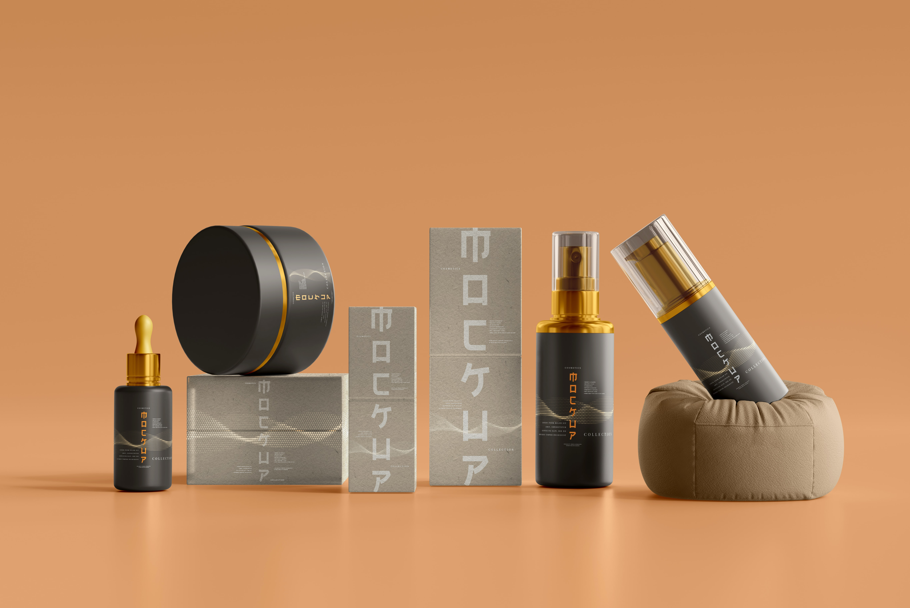

Beauty Product
Top Beauty Brand Sell is Here
Curology Beauty
Curology Biggest Sele is not done

Nike Quality
Light weight or running shoes by nike

Fashion Sell
Together to Buy the top Brands Shoes

Mac lipsticks
Beauty or face product by top Brands

Body Perfurm
Curology Perfurm Best Sell is now live

Beauty Product
Top Beauty Brand Sell is Here